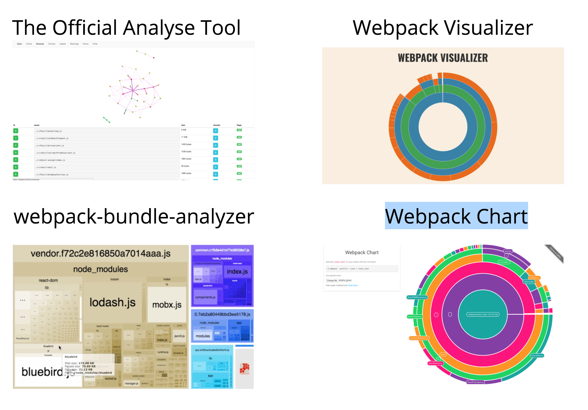

webpack 优化
webpack 性能分析工具

- 官方分析工具
http://webpack.github.io/analyse/
# 生成性能分析文件 stats.json
webpack --profile --json > stats.json
- Webpack Visualizer
http://chrisbateman.github.io/webpack-visualizer/
可视化查看每个模块的大小
- webpack-bundle-analyzer
分析bundle体积的组成. 找到占体积比较大的部分.
https://www.npmjs.com/package/webpack-bundle-analyzer
- Webpack Chart
也是用来分析每个模块的体积.
https://alexkuz.github.io/webpack-chart/
提高webpack构建速度
1. 库文件外链
将用到的库文件通过外链的形式引入. 避免将其打包到业务代码中. 同时可以减少打包后的bundle体积
通过配置的external参数来设置.
https://doc.webpack-china.org/configuration/externals/
防止将某些 import 的包(package)打包到 bundle 中，而是在运行时(runtime)再去从外部获取这些扩展依赖(external dependencies)。
<!-- 引用cdn的库 -->
<script src="https://code.jquery.com/jquery-3.1.0.js"></script>
// webpack config 配置
externals: ["react", /^@angular\//]
// 使用
import $ from 'jquery';
$('.my-element').animate(...);
2. 动态链接库(dll)
https://webpack.js.org/plugins/dll-plugin/#components/sidebar/sidebar.jsx
用到的node_modules中的库文件变更比较小, 如果每次构建的时候都构建打包一次会耗时比较多. 因此可以将用到的库文件提取出来, 打包为一个dll文件, 作为前置依赖在页面上引入. 这样在每次构建的时候只需要构建业务代码即可. 可以极大的提高构建的速度.
dll方式与external的区别. external 适合提供构建好的production文件的如vue, react等. 但是npm包中仍然有许多是没有生产包的. 或者对于只引用npm包中的部分内容的情况如(require('react/lib/react')), external就做不到了.
要使用dll方式需要2个步骤. 1. 构建生成dll文件. 2. 在业务代码的构建中引入dll文件的mainfest.json.
生成dll文件的webpack配置
先构建出dll文件, 会生成2个文件, dll.js 和 mainfest.json.
其中mainfest.json中包含每个模块的id. 在业务代码的bundle中, 通过该id引入相应的dll中的模块.
每次包文件的升级变更都需要重新执行dll构建
const path = require('path');
const webpack = require('webpack');
module.exports = {
entry: {
vendor: ['react', 'react-dom']
},
output: {
path: path.join(__dirname, 'dist'),
filename: '[name].dll.js',
/**
* output.library
* 将会定义为 window.${output.library}
* 在这次的例子中，将会定义为`window.vendor_library`
*/
library: '[name]_library'
},
plugins: [
new webpack.DllPlugin({
/**
* path
* 定义 manifest 文件生成的位置
* [name]的部分由entry的名字替换
*/
path: path.join(__dirname, 'dist', '[name]-manifest.json'),
/**
* name
* dll bundle 输出到那个全局变量上
* 和 output.library 一样即可。
*/
name: '[name]_library'
})
]
};
生成的mainfest.json如下
// cat dist/vendor-manifest.json
{
"name": "commonVendor_0ee12a1211e159ba4081",
"content": {
"../node_modules/core-js/modules/_export.js": {
"id": 0,
"meta": {}
},
"../node_modules/core-js/modules/_global.js": {
"id": 2,
"meta": {}
},
"../node_modules/core-js/modules/_fails.js": {
"id": 3,
"meta": {}
},
// ...
}
业务代码的构建中使用dll
const path = require('path');
const webpack = require('webpack');
module.exports = {
entry: {
'dll-user': ['./index.js']
},
output: {
path: path.join(__dirname, 'dist'),
filename: '[name].bundle.js'
},
// ----在这里追加----
plugins: [
new webpack.DllReferencePlugin({
context: __dirname,
/**
* 在这里引入 manifest 文件
*/
manifest: require('./dist/vendor-manifest.json')
})
]
// ----在这里追加----
};
3. 减少构建搜索或者编译路径
https://webpack.js.org/configuration/resolve/
resolve: {
alias: {
// 通过给引用的模块的路径设置alias别名, 可以减少路径的解析
'src': path.resolve(__dirname, '../src'),
'assets': path.resolve(__dirname, '../src/assets'),
'components': path.resolve(__dirname, '../src/components')
}
}
// 在引用 ~/git/project/src/app/header/index.js 时可以直接 require('src/app/header/index.js')
使用exclude编译的项目
{
test: /\.js$/,
exclude: /node_modules/,
loaders: [ 'happypack/loader?id=js']
}
4. 并行, 缓存
通过使用happypack来调用多进程构建.
exports.plugins = [
new HappyPack({
id: 'jsx',
threads: 4,
loaders: [ 'babel-loader' ]
}),
new HappyPack({
id: 'coffeescripts',
threads: 2,
loaders: [ 'coffee-loader' ]
})
];
exports.module.loaders = [
{
test: /\.js$/,
loaders: [ 'happypack/loader?id=jsx' ]
},
{
test: /\.coffee$/,
loaders: [ 'happypack/loader?id=coffeescripts' ]
},
]
无论在何种性能优化中，缓存总是必不可少的一部分，毕竟每次变动都只影响很小的一部分，如果能够缓存住那些没有变动的部分，直接拿来使用，自然会事半功倍，在 webpack 的整个构建过程中，有多个地方提供了缓存的机会，如果我们打开了这些缓存，会大大加速我们的构建，尤其是 rebuild 的效率。
- webpack.cache
rebuild + webpack 自身就有 cache 的配置，并且在 watch 模式下自动开启，虽然效果不是最明显的，但却对所有的 module 都有效。
- babel-loader.cacheDirectory
rebuild ++ babel-loader 可以利用系统的临时文件夹缓存经过 babel 处理好的模块，对于 rebuild js 有着非常大的性能提升。
- HappyPack.cache
build +, rebuild + 上面提到的 happyPack 插件也同样提供了 cache 功能，默认是以 .happypack/cache--[id].json 的路径进行缓存。因为是缓存在当前目录下，所以他也可以辅助下次 build 时的效率。